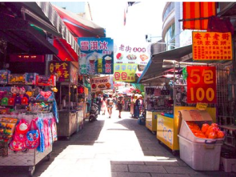
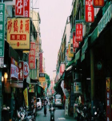
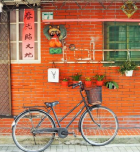
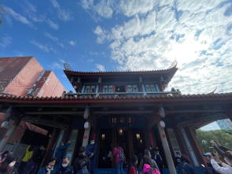
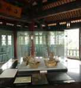
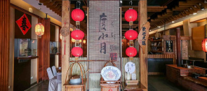
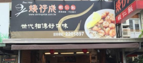
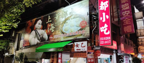

Attraction
観光名所
安平老街
「台湾の京都」の異名を持つ古都・台南。 かつて台湾の首都であったことから、 重要な史跡が点在し、ノスタルジックな ムードが漂っています。 17世紀に造られた台湾最古な街は、 現在、台湾レトロとも称されており、 数々の掘り出し物やお土産、飲食店が立ち並びます。 写真スポットとしても人気の高いエリアです。
 露店めぐりは日中、ノスタルジックな撮影は 夜がおすすめです。

赤崁楼
赤嵌楼は台南中西区の代表的な古跡で、 安平区の安平古堡と並んで台南の二大古跡になっています。 夜になると、周辺には黄色いライトが灯り、 古い建築物をより一層味わい深く演出してくれます。 前方の広場ではよく音楽会が催され、 台南市民の夜の憩いの場にもなっています。 赤嵌楼は、昼も夜も独特の魅力で楽しませてくれるでしょう。
遅い時間帯はライトアップも楽しめます。
営業時間 8:30～21:30
Gourmet
グルメ
台南でしか味わえない台湾グルメをご紹介いたします。
担仔麺
タンツーメン
台湾の屋台などでもよく食べられている麺料理で、 あっさりしたスープにそぼろがトッピングされて いるのが特長です。 「度小月」は各地に支店を持つ人気店です。
画像を見る ▶蝦仁飯
エビ飯
台南10大美食にも選ばれている代表料理です。 中でも有名な「矮仔成」は、台南に来ないと 味わえない料理として知られており、 日本人にも好まれる味です。
画像を見る ▶小籠包
ショウロンポー
小籠包は世界中で愛されている台湾料理の一つですよね。 「上海華都小吃」は、上海スタイルの料理を提供してくれるお店で、 特に小籠包に定評があります。
画像を見る ▶鴨肉飯
ヤーロウファン

台湾の軽食文化を指す小吃は、 台湾の人々の日々の食生活に欠かせないものとなっています。 中でも「亞德當歸鴨」の鴨肉飯は人気の一品です。
画像を見る ▶Healing
癒しのスポット
美しい蓮の花々が咲く白河地区。 自然に囲まれて、至福のひとときを過ごしませんか？
白河蓮花
白河地区は、蓮の栽培が盛んであり、 美しい蓮の花が咲く景観で知られています。 特に夏には蓮の花が最盛期を迎えるため、 白河蓮花節などのイベントが開催されて 多くの観光客が訪れます。
白河地区の蓮花は「台南白河蓮花」とも呼ばれています。 台南市の観光や文化の象徴の一つとされており、 地元の経済や観光に重要な役割を果たしています。